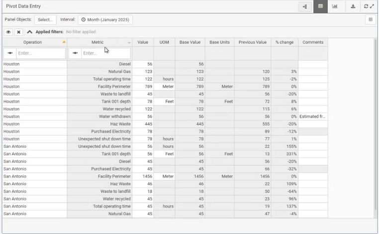

The names of the numeric requirements, calculations and data quality (DQT) fields available for the page are shown.

You can show, hide, and move columns on the numeric data panel and if requirement pivot is enabled, sort and filter by requirement.
If the column selector button is available, you can choose the columns you want to view, either by data type or by name.
This feature is useful to filter for the columns you want before downloading data to Excel. Only those columns that are visible in the table will then be downloaded.
To choose columns to show or hide:
To re-order the columns in the table view:
Hover over the column header to select the column, click and hold, and drag and drop the column to the desired position.

When a numeric data panel is configured to display requirement names down a single column, you can filter and sort the column by location or requirement. See Numeric Data Panel for more information.
